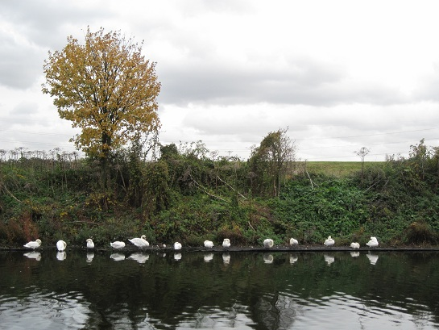

Friday, November the 5th, 2010
back to: title, date or indexes

Here is Mick Hartley‘s delightful snap of thirteen swans, very neatly lined up in a row. They are what we know as self-tidying swans. I checked the Swan Register and can confirm that they are, from left to right, Alcibiades, Blinky, Clovis, Digby, Eggbound, Flapper, Gertrude, Hoddinott, Icebrain, Jim, Krakatoa, Lars and Monique.
Their reflections in the pond or mere or lake or gigantic puddle are self-tidying water swans, that is, swans made of water, which wobble and shimmer, and resist capture. From right to left, according to the Water Swan Register, they are Nat, Olive, Popsy, Quetzalcoatl, Rex, Succubus, Totteridge, Ubuntu, Vincenzo, Whetstone, Xantippe, Yoko, and Blodwyn.
The fact that Blodywn's name is Blodwyn, rather than something beginning with Z, suggests that she may not be a self-tidying water swan, but rather an interloper. Such swans are commonly termed anomalous untidy water swan interlopers. There is no standard Register listing them, although volunteers who can devote a few hours per day to the compilation of such a Register are always welcome. You will need to be able to tell the difference, at a glance, between a swan and a water swan and other avian life-forms that paddle upon inland bodies of water.